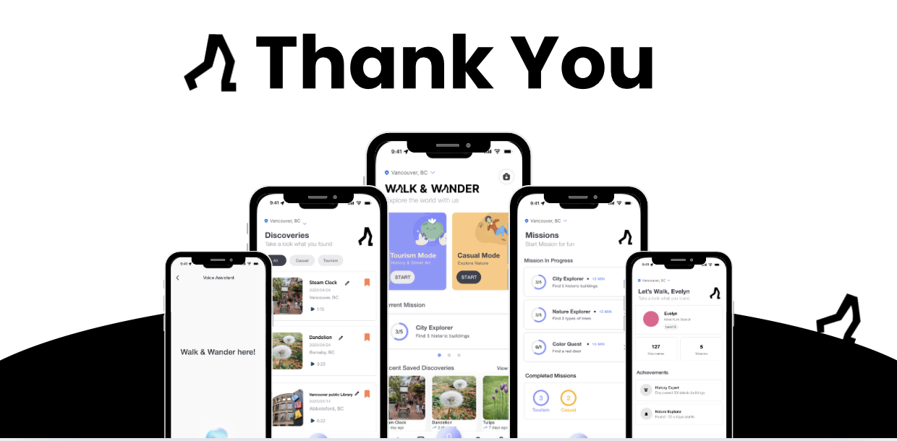
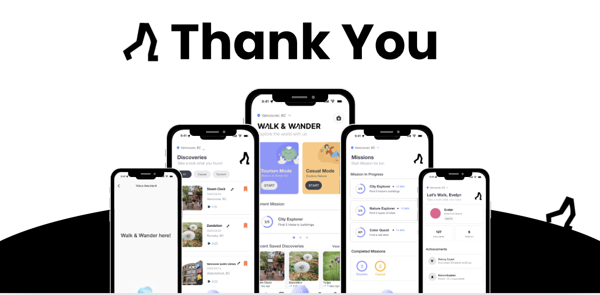
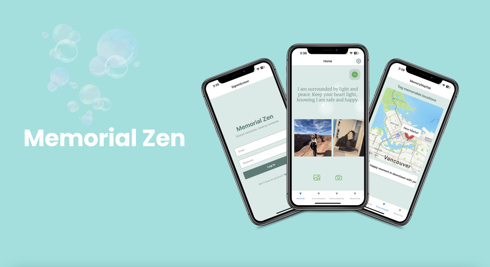
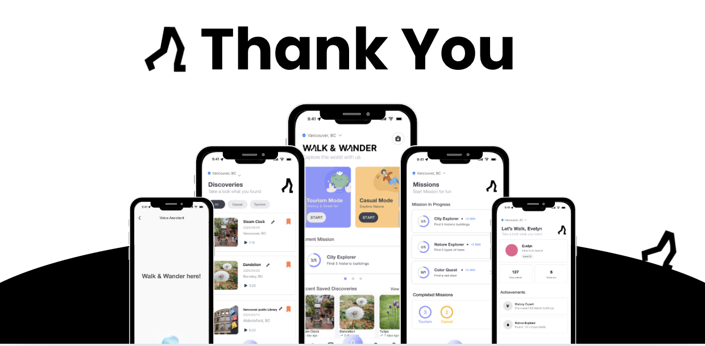

Projects
 

Mobile Application Design and Development
IAT359 Mobile App (Memorial Zen)


App-based Interface Design
IAT334 Interface Design
"I design emotionally supportive mobile experiences that bring comfort through intentional design, meaningful interaction, and calming visuals."
I'm a third-year SIAT student at SFU, specializing in UX/UI design with a growing focus on front-end development. With a background in visual creativity, I'm passionate about designing intuitive, meaningful digital experiences that connect with people.
I hold an Associate Degree in Business Administration, which has equipped me with a strong analytical mindset, problem-solving skills, and a user-first approach. This background allows me to merge business strategy with design thinking, ensuring that my work is not only visually compelling but also functional and user-centered. Currently, I'm learning and building projects to enhance user experiences, blending design and technology to create meaningful digital interactions.

IAT359 Mobile App (Memorial Zen)
IAT334 Interface Design